Clique sur une rubrique pour afficher ou masquer ses titres.
Films
Des longs métrages, souvent tirés d'histoires vraies. 12 titres
Films
Des longs métrages, souvent tirés d'histoires vraies. 12 titres
-
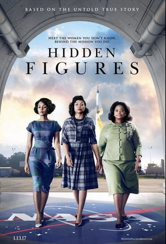
Dès la 5eLes Figures de l'ombre
L'histoire vraie de Katherine Johnson, Dorothy Vaughan et Mary Jackson, mathématiciennes noires de la NASA, qui calculent les trajectoires des premiers vols spatiaux américains. Un très bon support pour parler des femmes en sciences.
-
Dès la 5e
Mary
Mary, 7 ans, est surdouée en maths. Son oncle veut qu'elle ait une enfance normale, sa grand-mère veut en faire une mathématicienne. Quelques gros mots.
-
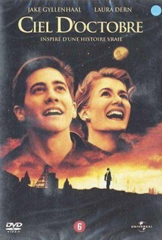
Dès la 5eCiel d'octobre
Histoire vraie : en 1957, après le lancement de Spoutnik, des lycéens d'une ville minière se lancent dans la fabrication de fusées, avec les maths et la physique comme outils.
-
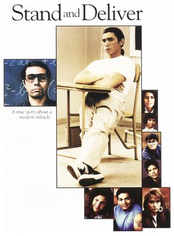
Dès la 5eEnvers et contre tous
Histoire vraie de Jaime Escalante, professeur de maths à Los Angeles, qui amène des élèves que personne ne croyait capables à réussir un examen de calcul très difficile.
-
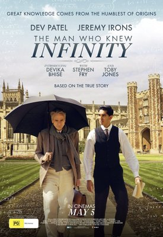
Dès la 4eL'Homme qui défiait l'infini
La vie de Srinivasa Ramanujan, génie indien autodidacte, invité à Cambridge par le mathématicien G. H. Hardy, qui lui apprend l'importance de la démonstration.
-
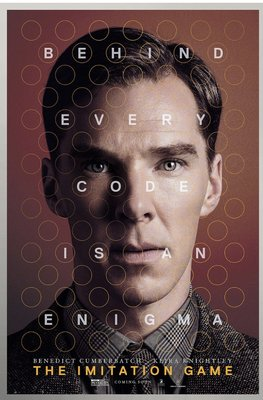
3e et +Imitation Game
Pendant la Seconde Guerre mondiale, le mathématicien Alan Turing et son équipe cassent le code de la machine Enigma. Certains thèmes (guerre, persécution de Turing) conviennent mieux en 3e.
-
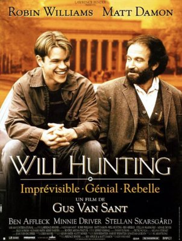
3e et +Will Hunting
Un jeune homme de ménage du MIT résout en cachette un problème difficile laissé au tableau par un professeur. Un génie des maths qui doit apprendre à se faire confiance. Langage parfois cru : plutôt en fin de 3e.
-
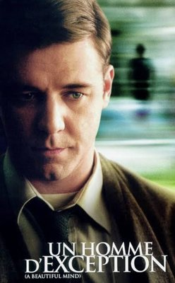
3e et +Un homme d'exception
La vie de John Nash, mathématicien de génie, prix Nobel d'économie pour ses travaux sur la théorie des jeux, qui lutte contre la schizophrénie. Un film fort, pour les plus grands.
-
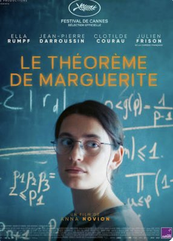
3e et +Le Théorème de Marguerite
Marguerite, doctorante en maths à l'École normale supérieure, prépare une thèse sur la conjecture de Goldbach. Une erreur découverte en plein exposé fait tout basculer. Le monde de la recherche vu de l'intérieur.
-
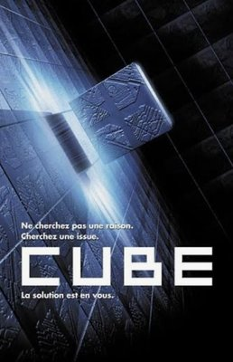
3e et +Cube
Des inconnus enfermés dans un immense cube de pièces piégées doivent repérer les pièces dangereuses grâce aux nombres premiers inscrits à l'entrée. Film de science-fiction violent : pour les plus âgés seulement.
-
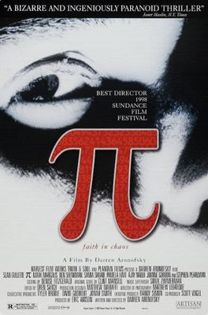
3e et +Pi
Un mathématicien obsédé cherche un nombre de 216 chiffres qui expliquerait la Bourse. Thriller en noir et blanc très angoissant, interdit aux moins de 12 ans à sa sortie : pour les élèves les plus âgés.
-
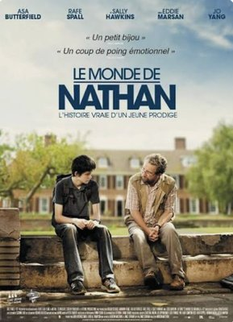
3e et +Le Monde de Nathan
Nathan, adolescent autiste doué en maths, est sélectionné pour les Olympiades internationales de mathématiques. Un film sur les maths, l'amitié et la différence.
Courts métrages
Moins de 40 minutes : parfait pour une séance en classe. 2 titres
Courts métrages
Moins de 40 minutes : parfait pour une séance en classe. 2 titres
-
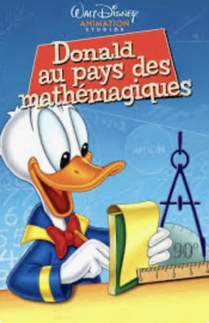
Dès la 6eDonald au pays des Mathémagiques
Donald découvre les maths cachées dans la musique, les jeux (billard, échecs), la nature et l'architecture : pentagramme, nombre d'or, cercles et sphères. Idéal pour une première séance.
-
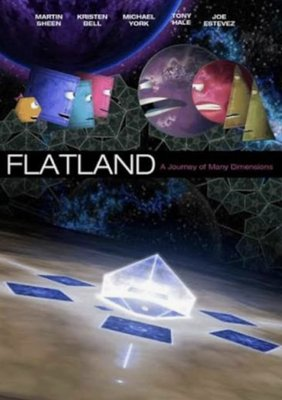
Dès la 4eFlatland
Un carré vit dans un monde à deux dimensions et ne peut pas imaginer la troisième… jusqu'à la visite d'une sphère. D'après le roman d'Edwin Abbott (voir les livres).
Séries
À regarder épisode par épisode. 2 titres
Séries
À regarder épisode par épisode. 2 titres
-
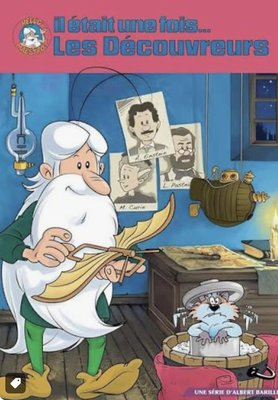
Dès la 6eIl était une fois… les Découvreurs
Le dessin animé de la famille « Il était une fois… » raconte les grands savants. À voir en priorité : l'épisode sur Archimède et Héron d'Alexandrie, et celui sur Newton.
-
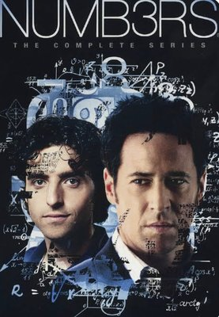
3e et +Numb3rs
Série policière : un professeur de maths aide son frère, agent du FBI, à résoudre des enquêtes grâce aux statistiques, aux probabilités et aux graphes.
Documentaires et vidéos
Pour comprendre des idées mathématiques et rencontrer des chercheurs. 4 titres
Documentaires et vidéos
Pour comprendre des idées mathématiques et rencontrer des chercheurs. 4 titres
-
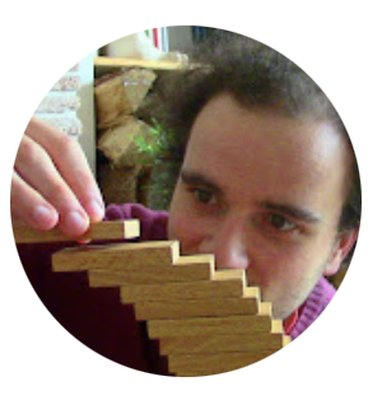
Dès la 6eMicmaths
Des vidéos ludiques sur des curiosités mathématiques : jeux de logique, tours de magie, formes étonnantes, grandes histoires des maths. Gratuit.
-
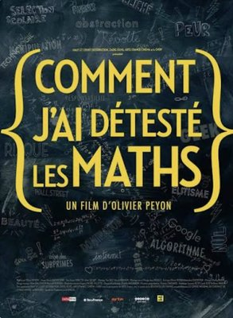
3e et +Comment j'ai détesté les maths
Pourquoi tant d'élèves détestent-ils les maths ? Un documentaire français avec des chercheurs, dont Cédric Villani, sur la place des maths dans l'école et dans la société.
-
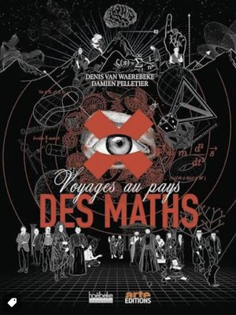
3e et +Voyages au pays des maths
Une série animée sur de grandes idées mathématiques. Beaucoup d'épisodes sont de niveau lycée ; en 3e, commencer par Monty Hall, les pavages du plan, la théorie des graphes ou la loi de Benford.
-
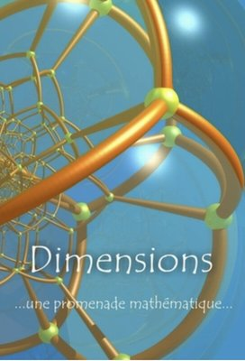
3e et +Dimensions
Une promenade mathématique en images de synthèse, de la dimension 2 à la dimension 4. Les premiers chapitres sont accessibles en 3e. Libre de droits.
BD
Des maths en bulles. 5 titres
BD
Des maths en bulles. 5 titres
-
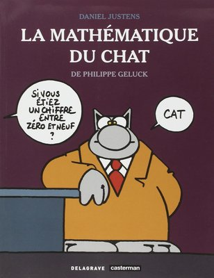
Dès la 6eLa Mathématique du Chat
Des dessins humoristiques du Chat de Geluck, accompagnés d'explications mathématiques de Daniel Justens. À feuilleter en riant.
-
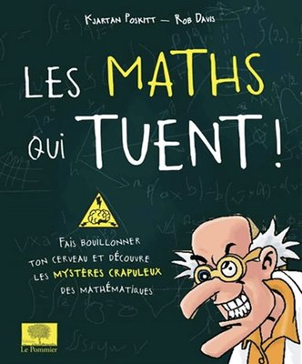
Dès la 6eLes maths qui tuent
Des maths expliquées avec beaucoup d'humour noir et de dessins, par l'auteur de la célèbre série anglaise Murderous Maths.
-
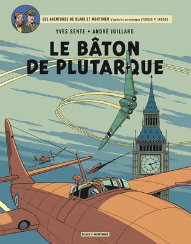
Dès la 4eLe Bâton de Plutarque
Une aventure de Blake et Mortimer autour des codes secrets : Bletchley Park, la machine Enigma, la scytale (le « bâton » du titre) et le carré de Polybe.
-
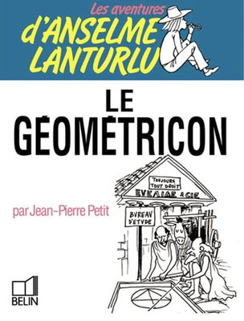
3e et +Le Géométricon
Une BD de vulgarisation où Anselme Lanturlu explore la géométrie : surfaces, courbure, géométries non euclidiennes. Les albums de la série sont diffusés en ligne par l'association Savoir sans frontières.
-
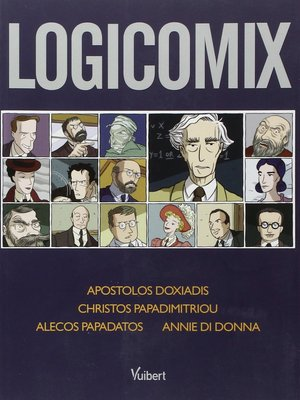
3e et +Logicomix
Un roman graphique sur la vie du logicien Bertrand Russell et la quête des fondements des mathématiques. Pour les élèves curieux et bons lecteurs.
Romans
Des histoires où les maths jouent un grand rôle. 5 titres
Romans
Des histoires où les maths jouent un grand rôle. 5 titres
-
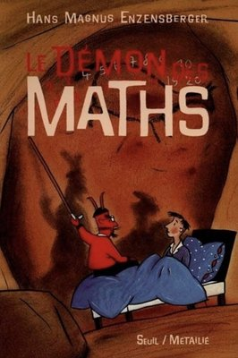
Dès la 6eLe Démon des maths
Robert déteste les maths. Pendant douze nuits, un drôle de démon vient le voir en rêve et lui fait découvrir les nombres, les puissances, les nombres premiers…
-
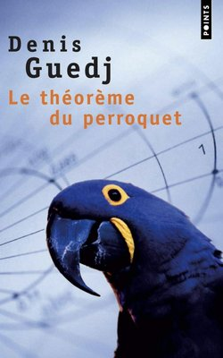
3e et +Le Théorème du perroquet
Un vieux libraire parisien reçoit une bibliothèque de livres de maths et un perroquet bavard. Un roman policier qui retrace l'histoire des maths, de Thalès à Fermat. Pour les bons lecteurs dès la 4e.
-
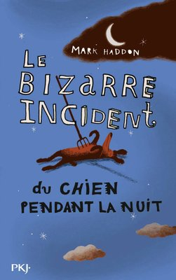
3e et +Le Bizarre Incident du chien pendant la nuit
Christopher, 15 ans, autiste et passionné de maths, enquête sur la mort du chien de sa voisine. Les chapitres sont numérotés avec des nombres premiers. Quelques passages au langage cru.
-
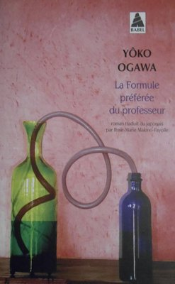
3e et +La Formule préférée du professeur
Une aide-ménagère, son fils et un vieux professeur de maths dont la mémoire ne dure que 80 minutes. Un roman court et touchant sur la beauté des nombres.
-
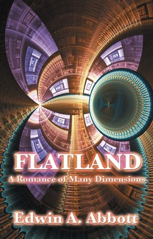
3e et +Flatland
Le roman original : la vie dans un monde plat, où les habitants sont des figures géométriques. Une façon originale de réfléchir aux dimensions.
Livres
Énigmes, histoire des maths et vulgarisation. 4 titres
Livres
Énigmes, histoire des maths et vulgarisation. 4 titres
-
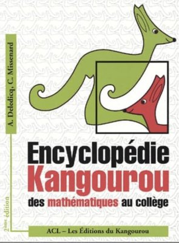
Dès la 6eLes livrets du Kangourou
Les éditions du concours Kangourou publient des petits livrets d'énigmes, de jeux et d'histoire des maths, comme l'Encyclopédie Kangourou des mathématiques au collège, Histoire des maths (en BD) ou Pythagore et Thalès.
-
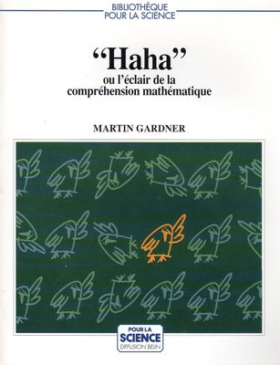
Dès la 4eHaha ou l'éclair de la compréhension mathématique
Des énigmes illustrées en petites scènes dessinées, par le grand maître des maths récréatives. Chaque problème cache une astuce qui fait « Haha ! ».
-
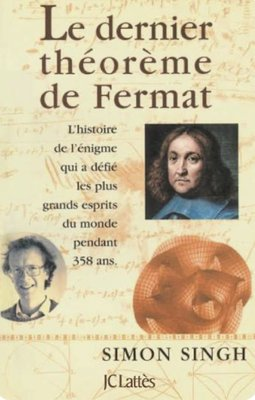
3e et +Le Dernier Théorème de Fermat
L'histoire d'une énigme restée sans démonstration pendant plus de 350 ans, de Pythagore et Fermat jusqu'à Andrew Wiles, qui la résout en 1994. Un récit passionnant, pour les bons lecteurs.
-
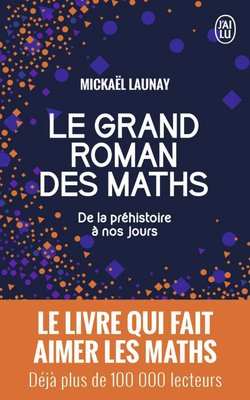
3e et +Le Grand Roman des maths
L'histoire des maths de la Préhistoire à nos jours, racontée simplement par l'auteur de la chaîne Micmaths. Prix Tangente du livre 2017.
Aucun titre ne correspond à ce niveau.
Sélection complétée avec la liste collège LittéraMath de l'IREM de Montpellier.